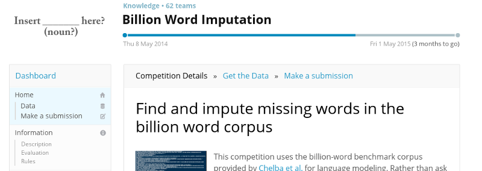

1Bn Word NLP
with Theano
15 January 2015
Background
- Finance / Startups / Machine Learning
- Moved to Singapore in Sep-2013
- The past year = 'fun' :
-
- Machine Learning Reading : Deep Learning, NLP
- Languages : Python, Go, Scala, NodeJS, Haskell, Python
- "MeetUp Pro" / Novice Kaggler
Motivation
- Goals :
-
- Do some real-world-scale NLP
- Use Theano
- Improve Theano (OpenCL)
- Magic Solution : Kaggle Competition
1Bn Word Imputation
Kaggle Competition
Test Set
- ~300k sentences, each with 1 word missing
-
- Want : Each sentence filled-in correctly
- Scoring :
-
- Levenshtein distance = character-based errors
- This is a linguistically odd objective function
Training Set
- "1 billion" word corpus :
-
- 4.1Gb of data, 769 million words
- 30 million sentences
- Drawn from many different sources
- No other knowledge should be used
Kaggle Status
- Competition ends in May-2015
- But activity has mostly died down :
-
- Impressive groups with CPU clusters
- Data size is also a hurdle
- Only for fun : No 'points'
- Will release 'Getting Started' Code for laptop
My Basic Approach
- Find where there's a word missing
- For that position think up a word
- Apply Deep Learning to score possibilities
Word Embedding
How to handle 'discrete' things like Words?

Trainable on Wikipedia

5.7MM documents, 5.4Bn terms
→ 155k words, 500-D embedding
Finds Relationships

Semantic too
Wrap-up
- Deep Learning is 'hot' for a reason
- Main difference from the past :
-
- Quantity of Data available
- Amount of Compute power available
- Have fun with ConvnetJS ...
The Future
- This coming year = 'serious' :
-
- Working for Local Company
- Sole Focus : NLP (financial documents + relationships)